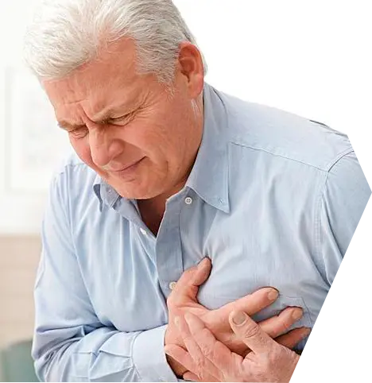

<!DOCTYPE html>
<html lang="en">

<head>
	<meta charset="UTF-8">
	<meta name="viewport" content="width=device-width, initial-scale=1.0">
	<meta name="description" content="@@description">
	<meta name="keywords" content="">
	<link rel="stylesheet" href="css/libs.min.css">
	<link rel="stylesheet" href="css/style.min.css">
	<title>Инфаркт</title>
</head>


<body>

<!--	<section class="causes-disease">-->
<!--		<div class="container">-->
<!--			<div class="causes-disease__inner">-->
<!--				<div class="causes-disease__items">-->
<!--					-->
<!--					<div class="causes-disease__item">-->
<!--						<div class="causes-disease__item-number">01</div>-->
<!--						<div class="causes-disease__item-desc">-->
<!--							<div class="causes-disease__item-title">Аритмия</div>-->
<!--							<div class="causes-disease__item-text">Нарушение сердечного ритма</div>-->
<!--						</div>-->
<!--					</div>-->
<!--					<div class="causes-disease__item">-->
<!--						<div class="causes-disease__item-number">02</div>-->
<!--						<div class="causes-disease__item-desc">-->
<!--							<div class="causes-disease__item-title">Кардиогенный шок</div>-->
<!--							<div class="causes-disease__item-text">Сопровождается нарушением кровообращения жизненно важных органов</div>-->
<!--						</div>-->
<!--					</div>-->
<!--					<div class="causes-disease__item">-->
<!--						<div class="causes-disease__item-number">03</div>-->
<!--						<div class="causes-disease__item-desc">-->
<!--							<div class="causes-disease__item-title">Сердечная недостаточность</div>-->
<!--							<div class="causes-disease__item-text">наблюдается при обширном поражении, проявляется одышкой, усталостью, появлением отеков</div>-->
<!--						</div>-->
<!--					</div>-->
<!--					<div class="causes-disease__item">-->
<!--						<div class="causes-disease__item-number">04</div>-->
<!--						<div class="causes-disease__item-desc">-->
<!--							<div class="causes-disease__item-title">Перикардит</div>-->
<!--							<div class="causes-disease__item-text">Воспалительный процесс оболочки сердца</div>-->
<!--						</div>-->
<!--					</div>-->
<!--					<div class="causes-disease__item">-->
<!--						<div class="causes-disease__item-number">05</div>-->
<!--						<div class="causes-disease__item-desc">-->
<!--							<div class="causes-disease__item-title">Тромбоэмболические осложнения</div>-->
<!--							<div class="causes-disease__item-text">Возникают в результате длительного постельного режима и недостаточности кровообращения</div>-->
<!--						</div>-->
<!--					</div>-->
<!--					<div class="causes-disease__item">-->
<!--						<div class="causes-disease__item-number">01</div>-->
<!--						<div class="causes-disease__item-desc">-->
<!--							<div class="causes-disease__item-title">Нарушение работы ЖКТ</div>-->
<!--							<div class="causes-disease__item-text">Возникают язвы желудка и эрозии, проявляющиеся изжогой, болями после приема пищи</div>-->
<!--						</div>-->
<!--					</div>-->
<!--				</div>-->
<!--			</div>-->
<!--		</div>-->
<!--	</section>-->

	<script src="js/libs.min.js"></script>
<script src="js/main.min.js"></script>

</body>

</html>
